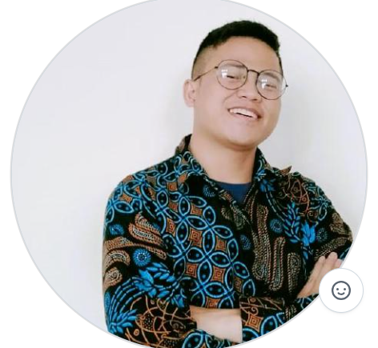

Halo! Saya Jali Suhaman
Seorang pengembang web dan penggiat AI yang berdedikasi untuk membangun solusi digital yang cerdas dan bermanfaat. Saya senang menggabungkan teknologi, pembelajaran, dan kreativitas dalam setiap proyek yang saya kerjakan.
Saya memiliki pengalaman dalam pengembangan aplikasi berbasis ASP.NET, Python, serta minat khusus dalam bidang AI/ML dan edukasi teknologi. Bagi saya, belajar tanpa batas adalah semangat utama.

Skills
ASP.NET MVC & Razor Pages
HTML, CSS, JavaScript, Bootstrap
Python & Machine Learning
Microsoft SQL Server & EF
Komunikasi, Presentasi, Edukasi
Education
Universitas Amikom Purwokerto – Bachelor in Computer Science | GPA: 3.59 / 4.00
2018 - 2022, Purwokerto, Indonesia
Relevant courses: AI, Mobile & Website Programming, Architecture & Computer Organization, Human & Computer Interaction
PESMA Masjid Fatimatuzzahra – Ketua Mahasantri, Trainer of Public Speaking, Tasmih Juz 16 (Zayyid Ziddan)
Cendekia Laznas Al-Irsyad – Head of Program Oemah Sinau, Content Writer, Video Editing, Desain Grafis, Social Dedication
Work Experience
- PT. KUMON DENGKLOK PERMAI – Assistant Math Specialist (2017–2018)
- PT. ORBIT VENTURA INDONESIA – AI Instructor & Mentor (2022–2024)
- THE LAB INDONESIA – Instructor Python Programming (Aug 2024 – Present)
My Future Plan
Saya senang dengan dunia pendidikan dan yakin bahwa pendidikan akan merubah dunia!
Dalam kurun waktu 6–10 tahun ke depan, saya bercita-cita membangun yayasan pendidikan berbasis teknologi untuk semua kalangan khususnya yang kurang mampu, yatim, dan masyarakat umum agar memberi kebermanfaatan yang lebih luas.